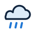
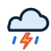
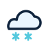

clear.svgFRONTLINE FORECAST
Weather icon review
A first custom vector set for review. These are not connected to the live forecast yet; the current emoji icons stay in place until you choose the direction.
partly-cloudy.svgcloudy.svg
Rainrain.svg
Thunderstormthunderstorm.svg
Snowsnow.svgfog.svg